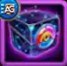

Firstborn Force is Ancient Awakening's daily-reset branch. Login progress lasts all week, but the other seven mission ladders reset every day. Claim affordable stages before each reset, then reserve the largest resource pushes for the matching Guild VS days.

Ancient Awakening Guides


Daily Reset Warning
Only Day After Day is cumulative. The VIP, Guild Activity, Fairy Dust, Summoning Circle, Tower, Artifact Chest, and Realm boss ladders reset daily. The main Ancient Awakening meta therefore counts up to 426 possible stage completions across the week: six login stages plus 60 daily stages on each of seven days.
Firstborn Force Best-Day Planner
| Day | Best Ancient Awakening Actions | Guild VS Value |
|---|---|---|
| Monday | Open a Summoning Sphere; Defeat Boss; Open a chest in the Tower; Get VIP Points | 1,500 points per 1 (Open a Summoning Sphere); 850 points per 1 (Defeat Boss); 4,000 points per 1 (Open a chest in the Tower); 100 points per 1 (Get VIP Points) |
| Tuesday | Open a chest in the Tower; Get VIP Points | 4,000 points per 1 (Open a chest in the Tower); 100 points per 1 (Get VIP Points) |
| Wednesday | Spend Energy; Open an Artifact Chest; Defeat Boss; Open a chest in the Tower; Get VIP Points | 100 points per 3 (Spend Energy); 750 points per 1 (Open an Artifact Chest); 850 points per 1 (Defeat Boss); 4,000 points per 1 (Open a chest in the Tower); 100 points per 1 (Get VIP Points) |
| Thursday | Spend Mastery Crystals; Open a chest in the Tower; Get VIP Points | 200 points per 15 (Spend Mastery Crystals); 4,000 points per 1 (Open a chest in the Tower); 100 points per 1 (Get VIP Points) |
| Friday | Open an Artifact Chest; Defeat Boss; Open a chest in the Tower; Get VIP Points | 750 points per 1 (Open an Artifact Chest); 850 points per 1 (Defeat Boss); 4,000 points per 1 (Open a chest in the Tower); 100 points per 1 (Get VIP Points) |
| Saturday | Spend Rune Spheres; Open a chest in the Tower; Get VIP Points | 50,000 points per 100 (Spend Rune Spheres); 4,000 points per 1 (Open a chest in the Tower); 100 points per 1 (Get VIP Points) |
| Sunday | Finish worthwhile daily milestones and claim the last login. | No Guild VS tasks. |
Complete worthwhile daily stages throughout the week. Mastery Crystals on Thursday and Rune Spheres on Saturday refer to spending rewards already claimed, not to mission objectives. Rates follow guild_vs_hwa.json.
Best Daily Priority
- Claim the easy login and low-cost stages.
- Spend Energy every day for Guild Activity, save flexible extra Energy for Wednesday's Guild VS task, and claim Energy from Guild VS reward chests. Exchange spare equipment for Guild Activity in the Guild Equipment Forge.
- Take all free Tower opportunities.
- Make resource-heavy pushes on the exact Guild VS day.
- Stop before a milestone costs more than its rewards are worth.
Best Daily Tower Chest Strategy by Budget
The supplied Tower note gives 11 free chests per day and extra chests on floors 1-5 at 70 Emeralds each. The targets below follow this event's 10, 15, 20, 25, and 30-chest milestones.
| Player Type | Daily Target | How to Open | Emeralds per Day | Seven-Day Cost | Final Milestone Reward |
|---|---|---|---|---|---|
| F2P | 11 | Use all 11 free chests; this completes the 10-chest milestone. | 0 | 0 | 500 Titan Skin Stones; 400 Eternal Marks; 10 Skin Stone Chests |
| Low spender | 15 | 11 free chests plus four 70-Emerald chests. | 280 | 1,960 | 750 Titan Skin Stones; 500 Eternal Marks |
| Medium spender | 20 | 11 free chests plus nine 70-Emerald chests. | 630 | 4,410 | 800 Eternal Marks; 15 Season Points |
| High spender | 30 | Complete the final mission milestone; compare individual prices with the live batch offer. | Check in-game | Seven times the daily cost | 500 Fairy Dust; 2,000 Eternal Marks; 1,200 Adventure Coins |
The supplied batch estimate of about 2,320 Emeralds covers all 33 chests (about 16,240 over seven days). The mission ends at 30, so compare the actual cost of stopping there before choosing the full batch.
1. Day After Day
Objective: Log in during the event. This cumulative chain starts at two logins and ends at seven.
Guild VS Strategy
Log in every day and claim all six milestones. Sunday still advances this event.
| Logins | Rewards |
|---|---|
| 2 | |
| 3 | |
| 4 | |
| 5 | |
| 6 | |
| 7 | |
| Event total | 3,000 Titan Skin Stones; 1,800 Eternal Marks |
2. Generous Soul
Objective: Earn VIP Points before the daily reset.
Guild VS Strategy
Monday through Saturday award 100 Guild VS points per VIP Point. Sunday advances the event only.
| VIP Points | Rewards |
|---|---|
| 100 | |
| 200 | |
| 400 | |
| 800 | |
| 1,600 | |
| 2,600 | |
| 4,500 | |
| Daily total | 6,000 Titan Skin Stones; 20 Rune Spheres; 23,450 Eternal Marks; 60 Season Points; 2,500 Adventure Coins; 10 Elemental Spheres |
3. United Front
Objective: Earn Guild Activity points before the daily reset.
Guild VS Strategy
Spend normal daily Energy and exchange spare equipment for Guild Activity in the Guild Equipment Forge. Wednesday awards 100 Guild VS points per 3 Energy spent, so flexible extra Energy can advance both objectives. Claim available Guild VS chest Energy to help with daily progress.
Alexandre's Guild Tip
Every day, upgrade any Glyph by one level to complete the daily quest and collect 700 Guild Activity points. If you are low on Rune Stones, choose a hero with a very low-level Glyph so that the upgrade costs as little as possible. I have used this method for years to secure these 700 points without draining valuable resources.
| Guild Activity | Rewards |
|---|---|
| 250 | |
| 500 | |
| 1,000 | |
| 1,500 | |
| 2,000 | |
| 2,500 | |
| 300 | |
| 3,500 | 200 Mastery Crystals |
| 4,000 | |
| 4,500 | |
| Daily total | 10,500 Eternal Marks; 15 Adventure Energy; 2,005 Titan Skin Stones; 1,600 Adventure Coins; 5 Elemental Spheres; 400 Titan Potions; 25 Season Points; 650 Fairy Dust; 200 Mastery Crystals |
The supplied seventh milestone is 300 Guild Activity, between 2,500 and 3,500. It is reproduced as supplied and needs confirmation.
5. Summoning Titans
Objective: Complete summons in the Summoning Circle before the daily reset.
Guild VS Strategy
The local Guild VS rotation lists opening Summoning Spheres on Monday at 1,500 points each. Use planned Summoning Circle sphere openings on Monday for the overlap; complete affordable daily stages throughout the week.
| Summoning Circle Summons | Rewards |
|---|---|
| 3 | |
| 5 | |
| 10 | |
| 20 | |
| 30 | 100 Mastery Crystals500 Mastery Crystals |
| 40 | 1,000 Elemental Coins |
| 50 | |
| Daily total | 100 Adventure Energy; 20 Season Points; 1,000 Elemental Coins; 3,900 Eternal Marks; 1,000 Adventure Coins; 4 Titan's Strength Helmet recipe fragments; 600 Mastery Crystals; 1,500 Titan Skin Stones; 30 Rune Spheres |
The corrected data lists Eternal Marks at 5, 10, 20, and 50 summons, and 1,000 Elemental Coins at 40 summons. The 5-summon milestone includes 500 + 200 Eternal Marks (700 total). The 30-summon milestone lists two Mastery Crystal rewards (100 and 500); both are included.
6. Tower Trophy
Objective: Open Tower chests before the daily reset. The final milestone is 30 chests.
Guild VS Strategy
Monday through Saturday award 4,000 Guild VS points per Tower chest. Take free daily chests; 30 qualifying openings yield 120,000 Guild VS points.
| Tower Chests | Rewards |
|---|---|
| 2 | |
| 5 |  3 Skin Stone Chests |
| 8 | |
| 10 | |
| 15 | |
| 20 | |
| 25 | 100 Meta Cubes |
| 30 | |
| Daily total | 650 Fairy Dust; 5,300 Eternal Marks; 6 Adventure Energy; 13 Skin Stone Chests; 1,300 Adventure Coins; 25 Season Points; 1,250 Titan Skin Stones; 100 Meta Cubes; 4 Titan's Strength Helmet recipe fragments |
7. Valkyrie's Artifacts
Objective: Open Artifact Chests before the daily reset.
Guild VS Strategy
Wednesday and Friday award 750 Guild VS points per Artifact Chest. A 40-chest completion on either day yields 30,000 points.
| Artifact Chests | Rewards |
|---|---|
| 5 | |
| 10 | |
| 20 | |
| 30 | |
| 35 | |
| 40 | |
| Daily total | 3,850 Eternal Marks; 5 Adventure Energy; 25 Season Points; 700 Adventure Coins; 5 Titan Soul Stones; 200 Fairy Dust; 100 Meta Cubes |
8. Payback Time
Objective: Defeat bosses as Raid Leader before the daily reset.
Guild VS Strategy
Monday, Wednesday, and Friday award 850 Guild VS points per boss. Ten qualifying Raid Leader victories yield 8,500 points.
| Bosses Defeated as Raid Leader | Rewards |
|---|---|
| 1 | |
| 2 | |
| 3 | |
| 4 | |
| 6 | |
| 8 | |
| 10 | |
| Daily total | 1,750 Eternal Marks; 56 Wood (10K); 56 Food (10K); 1 Elemental Spheres; 1,750 Titan Skin Stones; 200 Fairy Dust; 10 Season Points; 1 Stone (100K); 400 Titan Potions; 1 Iron (100K); 6 1-hour General Speedups |
How Hard Is the 370-Quest Meta?
| Main Meta Target | Approximate Daily Stages | Planning Meaning |
|---|---|---|
| 120 quests | About 17 per day | Reachable by combining easy stages from several ladders. |
| 210 quests | About 30 per day | Requires consistent daily play and moderate stockpiles. |
| 320 quests | About 45 per day | High-resource target across nearly every ladder. |
| 370 quests | 52 per day | Requires 364 daily stages plus six logins: 52 daily stages on average, leaving 56 of the 420 daily stages optional. |
The calculation allows for six cumulative login stages, then divides the remaining requirement across seven daily resets.
Firstborn Force FAQ
Should I save every resource for its best day?
No. These ladders reset daily. Complete affordable stages every day, then make the biggest push on the matching Guild VS day.
When do Summoning Circle sphere openings match Guild VS?
Monday lists Open a Summoning Sphere at 1,500 points each. Use planned sphere openings then, while still completing affordable daily event tiers on other days.
Do Hydra battles count for Payback Time?
No. Payback Time requires Realm boss defeats as Raid Leader; Guild VS matches that boss action on Monday, Wednesday, and Friday.
 Ancient Awakening
Ancient Awakening Unstable Equilibrium
Unstable Equilibrium Pallant Event Shop
Pallant Event Shop